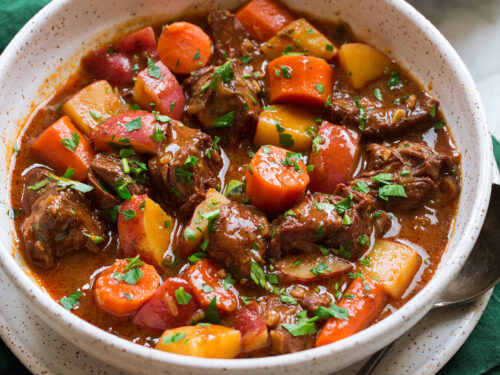

Beef Stew

Description
My favorite beef stew recipe. Perfect for a rainy day.
Ingredients
- 2 tbsp of bacon fat (or butter)
- 2 lb beef chuck, cubed
- 1 sweet onion, chopped
- 2 carrots, chopped
- 2 celery stalks, chopped
- salt and pepper
- 5 cloves garlic, minced
- 1 lb baby or red potatoes, roughly chopped
- 1/2 cup of pearled barley
- 4 tsp of Better Than Bouillon
- 6 cups water
- 1 cup red wine
- 1 tbsp Worcestershire sauce
- 1 6oz can tomato paste
- 2 sprigs fresh thyme
- 2 bay leaves
- 1/4 cup fresh parsley, chopped
Instructions
- Heat 1 tbsp bacon fat (or butter) in large dutch oven or heavy pot over medium-high heat until melted.
- Add beef and cook, turning occasionally, until all sides are seared. Transfer to plate.
- Add the remaining bacon fat (or butter) and heat until melted.
- Add onion, carrots, and celery. Season with salt and pepper. Cook until softened, stirring occasionally.
- Add garlic and tomato paste. Cook until fragrant.
- Return beef to pot and add barley. Add water, wine, Better Than Bouillon, Worcestershire, thyme and bay leaves.
- Bring to boil then reduce to simmer. Season with salt and pepper to taste. Cover and simmer with occasional stirring until beef is tender.
- Add potatoes and simmer until tender.
- Discard thyme and bay leaves. Portion soup into bowls and top with parsley.
- Enjoy!